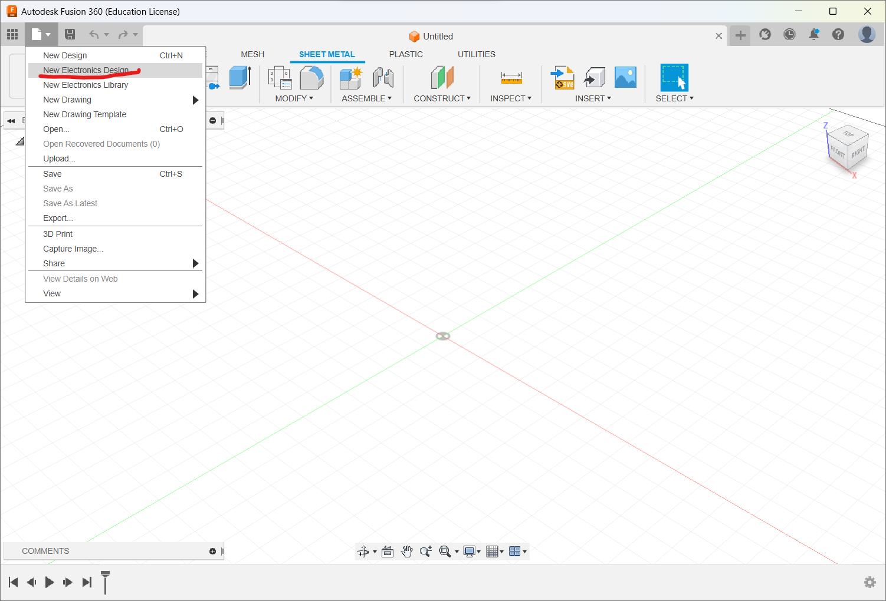
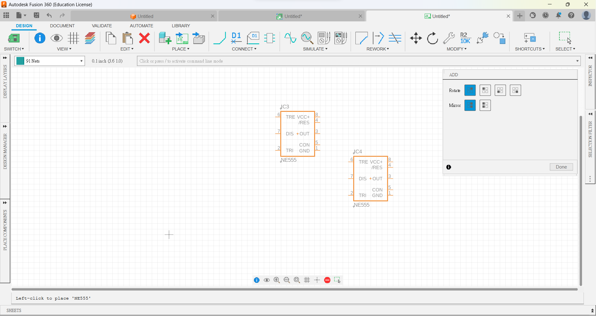
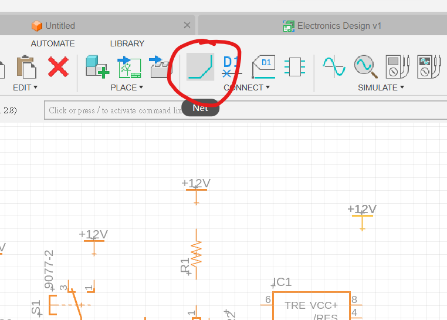
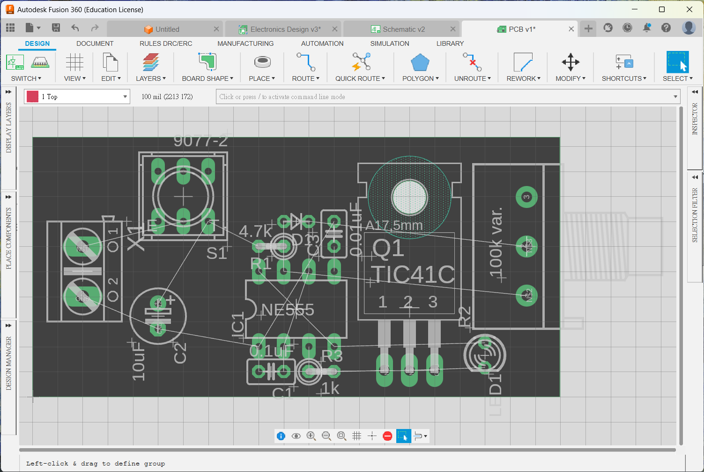
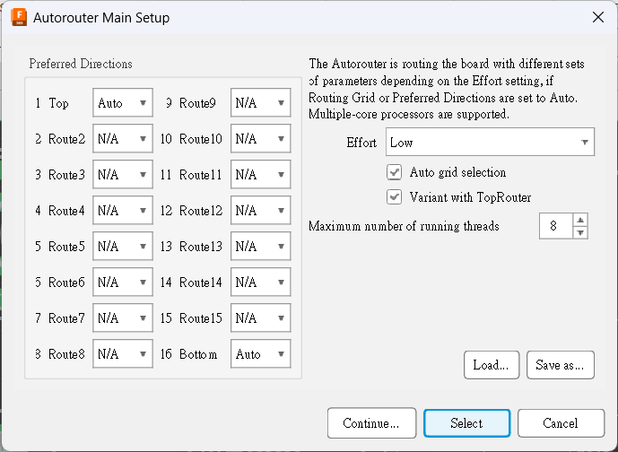
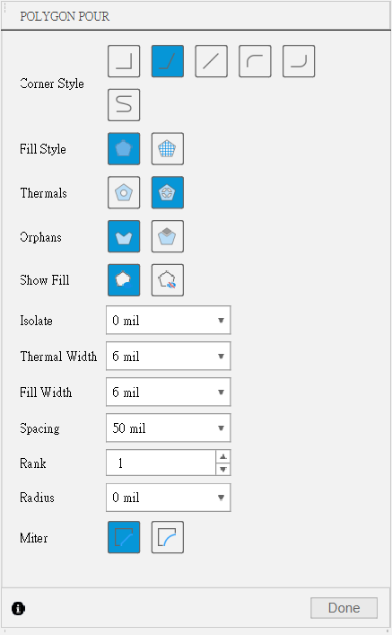
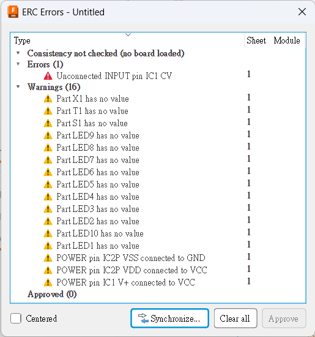

繪製電路圖與佈線圖
讓我們由一個最簡單的555調光器示範開始。

繪製電路圖與佈線圖Start電路圖插入零件連接零件Electrical Rule Check(ERC)佈線圖準備工作將零件排好Design Rule設定自動佈線PolygonDesign Rules Check(DRC)練習1佈線圖
Start

開啟我們熟識的Fusion360軟件。在左上角的file中，開始一個新的New Electronics Design。
接著會去到管理頁面。一塊PCB板最基本可分為兩種檔案，分別為電路圖和實際樣貌的佈線圖，如果你有心機的話，可以再輸出成3D PCB板，配合Fusion 360去設計。
首先按左上角，新增一個電路圖。
電路圖
電路圖的介面長這樣。左邊的欄位是可以拖動的，不用時可以將它收起來，或者嫌太小太難看的話，可以將它拖出來放大。

首先，在上方的Grid Setting，將格線打開方便對位置。
插入零件
在命令欄打add。
今次我們要製作的電路為555定時閃爍器，所以第一步就是要找到NE555。但如果你直接在搜尋欄是找不到的，因為了節省空間，Fusion360是沒有安裝電子元件的library的，所以第一步首先是按Open Library Manager。
NE555有很多個library都有，今次選用st-microelectronics，找到這個library之後，點選In Use。

之後就能在搜尋欄找到NE555。

按下OK後，就可以在畫面放下NE555。
之後就可以按照下表，將零件找出並放好。如果找到到零件的話，記得先搜尋相應的library，選取使用後才能找到。
| Part | Value | Device | Package | Library |
|---|---|---|---|---|
| C1 | 0.1uF | C-US025-025X050 | C025-025X050 | rcl |
| C2 | 10uF | CPOL-USE2.5-6 | E2,5-6 | rcl |
| C3 | 0.01uF | C-US025-025X050 | C025-025X050 | rcl |
| D1 | DIODE-D-2.5 | D-2.5 | diode | |
| IC1 | NE555 | NE555 | DIL-08 | st-microelectronics |
| LED1 | LED3MM | LED3MM | led | |
| Q1 | TIP41C | TIP31C | TO220 | transistor-npn |
| R1 | 4.7k | R-US_0207/2V | 0207/2V | resistor |
| R2 | 100k var. | 3RP/1610N | 3RP/1610N | pot |
| R3 | 1k | R-US_0207/2V | 0207/2V | resistor |
| S2 | 9077-2 | 9077-2 | 9077-2 | switch-misc |
| VIN | AK500/2 | AK500/2 | con-ptr500 | |
| +12V | +12V | supply1 | ||
| GND | GND | supply1 |
跟據手繪的線路圖，依次將需要用的零件在library中找出來放在繪圖區上
在放置的過程中
可用
move指令來移動零件1在移動時按滑鼠右鍵則可以很方便地旋轉(或者直接用
rotate指令都可以)可用
copy指令來複製零件。可用
name來為零件命名用
value來為零件設定值
連接零件

可用
net指令來為零件與零件之間接線在用net指今的時候，可按滑鼠右鍵來改變接線的方向，你也可以在上方的工具列改變接線的形狀。
如果接線有重疊，而又有需要連在一起的，記得用
junction指令為其加入墨點以表示是連結的
Electrical Rule Check(ERC)
在命令列輸入指令ERC。接著則要做ERC，檢查一下零件的接線有沒有問題，一般都只會見到有warnings，可以了解一下是甚麼原因，但如果見到有error的就一定要處理。常見的errors可能有: 忘記用junction將接線連接、接線沒有真的接到零件、忘記接線、接漏。而常見的warnings不外乎都是零件沒有值。如果不想下次再做ERC時再見到這些warnings，可以按Approve去接受這些warnings。
佈線圖
電路圖繪製好之後，就到電路板的佈線圖，這個部分和實物有直接關係，所以佈線時有些地方需要注意。
按下上方工具列有一個小小的白色/綠色icon，寫著SWITCH的icon。之後就會開啟多一個檔案。
準備工作
之後就會見到一個與之前差不多的介面，插入的零件已經放置在一旁，有幼細的綠色線，代表著剛才sch檔所繪製的電路接線。
先進行準備工作，第一個步驟是打開左上角icon的網格工具，或直接在命令列打grid。
Display選擇On，Size則選擇100mil，而下方的Alt則選擇50mill。如此，你在佈線圖上的所有移動和佈線距離都但鎖定在100mil的網格，而當你按下鍵盤的Alt鍵時，就會變成50mil的網格。
100mil即為1/1000英寸，即2.54mm，是典型的面包板的間隔距離，也是一般通孔元件的標準間距，所以佈線圖單位通常都用mil而不用mm
將零件排好

先移動最外層的綠色格，到差不多的大小
跟著就可以用
move指令，將元件移動到合適位置移動時可以用滑鼠右鍵旋轉，或者用
rotate指令移動時可以用滑鼠中鍵將元件反轉到板的下方，或者用
mirror指令(不過今次所有零件我們都會放在頂層)移動時要留意白色幼線的連接，留意零件的方向和排位，確保之後的連線盡可能短。
Design Rule設定
先去到RULES-->Design Rules。
到Board Outline Clearance這一版設定焊盤、導線等與邊緣的距離，預設是40mil，但一般不用設得這麼大，設計6mil已經足夠。
再找到Design Preferences按下。
再到Masks頁面，上面是決定阻焊綠油距離焊盤要多少緩衝。下面Limit就比較重要，用以決定大於多少的鑽孔不用蓋上阻焊綠油，一般我都會設定為3mm以上(記住要打上單位是mm，否則預設是mil)，如果設定是0mil的話，所有的通孔都不會蓋綠油，那在焊接時就會很容易不小心短路。
自動佈線
接下來只要全部自動佈線即可。
按下自動佈線的icon。

之後就會彈出一個setup的精靈，1-16的意思是有多少層的板，Fusion360最高支持16層的夾板，會我們今次的板只有上下兩層，所以只有1的top和16的bottom需要佈線。按continue繼續
如果手動佈了一點線，就會有一定的百分比已佈線，否則就會是0%已完成，按下start繼續。
等待電腦佈線計算，通常下面幾個會計算得比較快，最上的一個因為有經過最佳調教，所以會時間久一點，如無特別的話，用第一個結果就可以了。記得確保佈線是100%完成!!!

佈好之後就是這個樣子。
之後就會介紹其他必要的設定和怎樣輸出成gerber檔給代工公司生產。
Polygon
在準備輸出之前，首先要做polygon的動作。
因為PCB生產是用完整的覆銅板蝕走不要的地方造成電路，所以如果有很大面積需要蝕走，那泡在酸的時間就會增加，導致一些十分幼的信號線都有機會蝕走或變得十分脆弱，所以在做輸出檔之前，要先將整塊電路板鋪上一增polygon，將引線隔離出來，只需蝕走隔離的部分。
先在左邊工具列按下polygon的按鍵，或者在命令列打
polygon。在上方工具列選擇
TOP右方的工具列可以保留原值。


緣著板邊畫出一個方形。
接合好polygon後會彈出一個視窗，問你polygon接去那個signal
留空就可以，按下
OK。一般的電路板都會將這些polygon signal選擇為正電源或負電源，以獲得最大線寬
重覆上面的步驟，今次在底層用polygon鋪滿銅。
Design Rules Check(DRC)
跟ERC一樣，設計好的板記得記得要經過一次DRC，去檢查設計是否有出錯。
如果板是剛剛自動佈線完成，一般來說都應該是沒有錯誤的，此時不會有任何反應，否則就會出現error的視窗。
大功告成。
練習1
555+4017 LED Roulette Circuit1
以上練習題為一個555+4017的幸運輪盤，4017的16和8腳預設會隱藏起來，要對著4017按mouse右鍵-->invoke，將8和16腳顯示出來。R1的值則可以根據vcc的電壓值由330至1.5k不等而其他的零件可以參考下表:
| Part | Value | Device | Package | Library |
|---|---|---|---|---|
| C1 | 1uF | CPOL-USE2-5 | E2-5 | rcl |
| C2 | 100n | C-US025-024X044 | C025-024X044 | rcl |
| IC3 | LM555D | LM555D | SO08 | linear |
| IC2 | 4017D | 4017D | SO16 | 40xx |
| LEDs | LED3MM | LED3MM | led | |
| R1 | 560 | R-US_0207/10 | 0207/10 | rcl |
| R2 | 10K | R-US_0207/10 | 0207/10 | rcl |
| R3 | 3.3M | R-US_0207/10 | 0207/10 | rcl |
| R4 | 10M | R-US_0207/10 | 0207/10 | rcl |
| R5 | 3.3M | R-US_0207/10 | 0207/10 | rcl |
| S1 | 10-XX | B3F-10XX | switch-omron | |
| T1 | BC557A-PNP-TO92-EBC | TO92-EBC | transistor | |
| X1 | AK500/2 | AK500/2 | con-ptr500 |
跟之前的步驟一樣做ERC的話，會有以下error, 是正常的，全部approve就可以了，如果有其他以外的error就真的是error了。

佈線圖
這是一個555的抽獎燈線路，所以LED燈要佈成一個圓形，但如果手動佈的話很難確保是一個圓，這裡可以用到一個指令叫arrange。
第一步首先將電路板的邊界設定成2000mil x 2000mil
之後一次過選取10粒LED
在命令列打上
arrange這時會彈出一個視窗，選取圓形陣列，中心點打1000mil x 1000mil，超始角度為90度(即正上方)，半徑800mil
接著就可以隨意將其他零件擺放，只是要注意，電源應該放在最外面，而接鍵應該放在最中間。
記得參考之前的例子，設定
DRCrules將distance設定成6mil,masks中的limits設定成3mm還有
class中新增一個叫Power的class，線寬設定成25mil，將VCC,GND和R1與LED負極的接線也加到這個class中。最後再加入polygon。